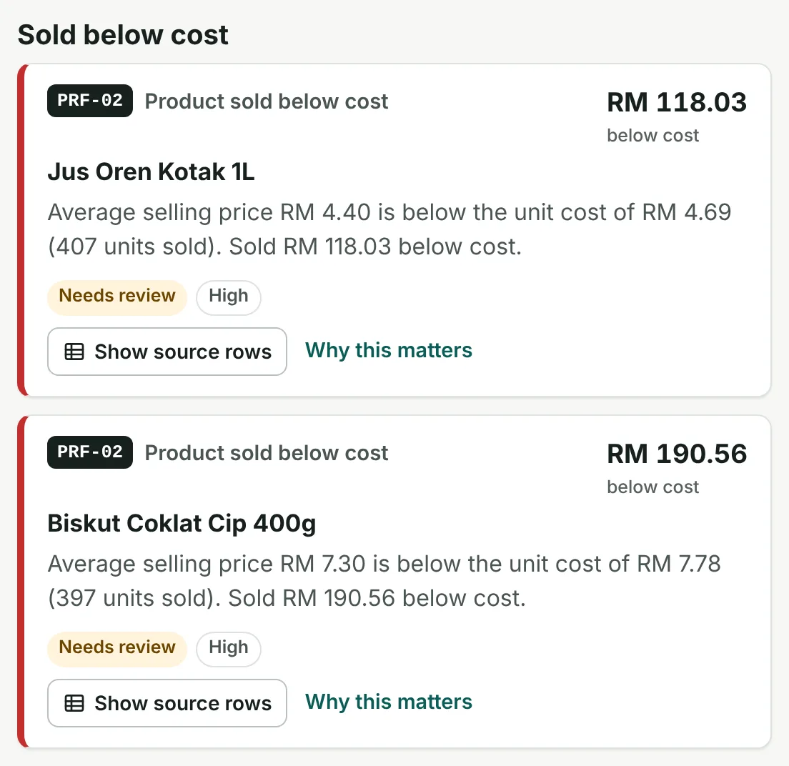
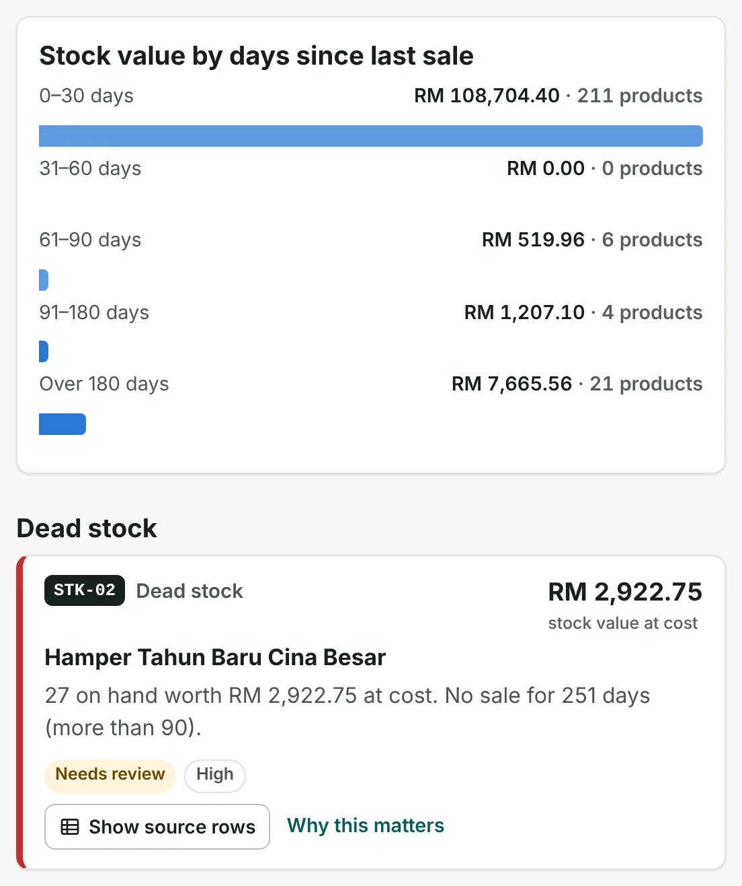
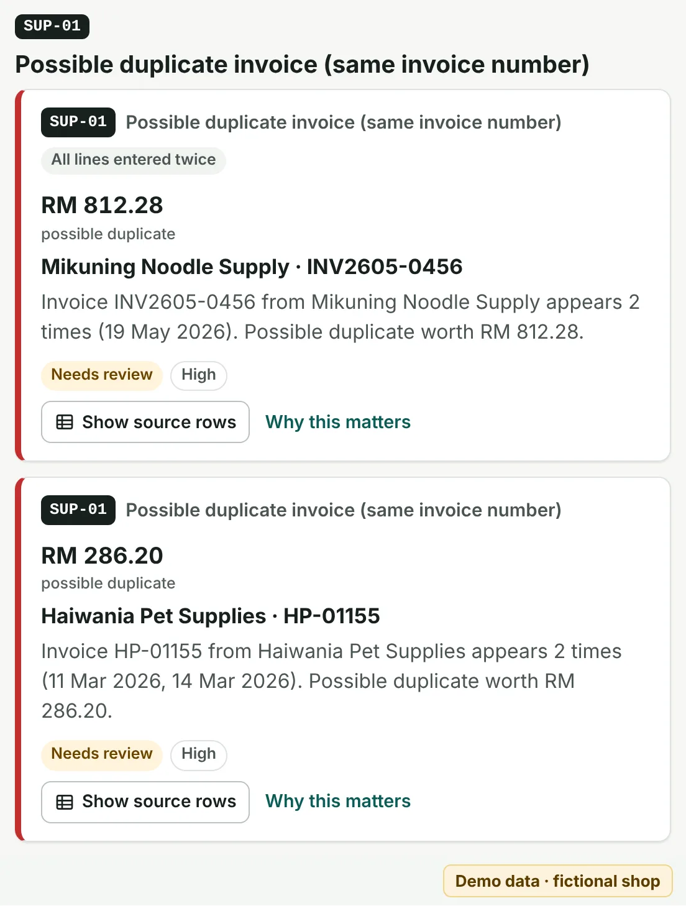
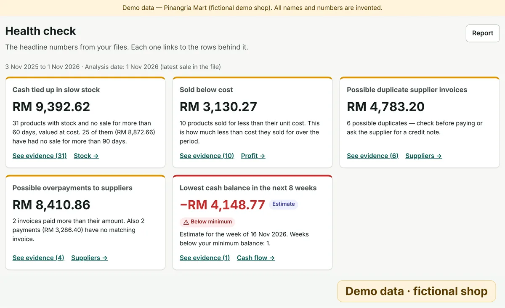
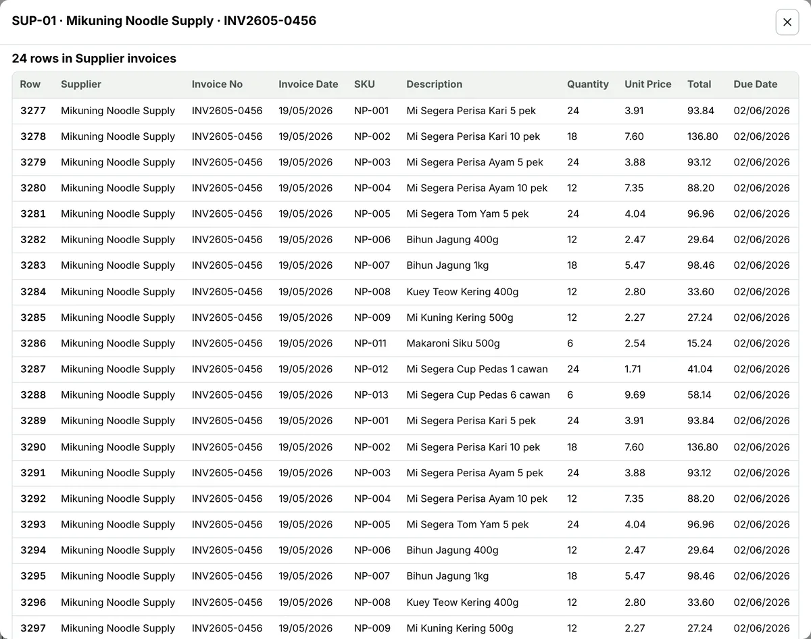

Profit by product每样货的利润
Profit and margin by product and category. Products sold below cost, and products under your target margin (default 25%).按产品和类别看利润、毛利率；哪些货低于成本卖出、哪些低于你的目标毛利（默认 25%）。
For retail shop owners in Malaysia · Accountant-checked 写给马来西亚零售店老板 · 会计师复核
Find products that sell below cost or under your target margin. We run checks on your own sales, stock and supplier exports, and an ACCA-qualified accountant in Penang reviews every finding before you see it. 找出哪些货低于成本在卖、哪些毛利太薄。我们用你店里自己导出的销售、库存和供应商资料跑检查，每一项发现都先由槟城的 ACCA 会计师逐项复核，才交给你。
See which stock hasn't sold in 60, 90 or 180+ days and what it's worth at cost, so you can decide what to clear, return or stop reordering. An ACCA-qualified accountant in Penang reviews every finding. 看清哪些货超过 60、90、180 天没卖出，按成本算压了多少钱，再决定要清货、退货还是不再补货。每一项发现都由槟城的 ACCA 会计师复核。
Spot possible duplicate invoices, invoices that may have been paid twice, and supplier price rises above 5%. Each one comes with the exact invoice rows, and an ACCA-qualified accountant in Penang reviews it. 找出可能重复的发票、可能付了两次的款项，以及涨价超过 5% 的供应商。每一项都附上原始发票行，并由槟城的 ACCA 会计师复核。



Most retail owners want the same thing: lose less, keep more. But the clues are spread across POS exports, stock lists and supplier invoices: 开店的老板想要的都一样：少亏一点，多赚一点。可是线索散落在 POS 报表、库存表和供应商发票里：
Profit and margin by product and category. Products sold below cost, and products under your target margin (default 25%).按产品和类别看利润、毛利率；哪些货低于成本卖出、哪些低于你的目标毛利（默认 25%）。
Stock value by days since last sale. Possible dead stock (no sale for 90+ days) and days of stock cover.按"距离上次卖出多少天"看库存金额；可能的死货（超过 90 天没卖出）和库存可卖天数。
Possible duplicate invoices, price rises above 5%, invoices that may have been paid twice or overpaid, and payments with no matching invoice.可能重复的发票、涨价超过 5%、可能付了两次或多付的发票，以及找不到对应发票的付款。
An estimate that flags weeks where cash may run short. It's a simple trend, clearly labelled, not a promise.估算哪几个星期现金可能不够用。这是简单的趋势估算，会清楚标明，不是保证。
Click any finding to see the exact rows from your own files, with their row numbers, so you can check it yourself.点开任何一项发现，就能看到你自己文件里的原始行和行号，可以自己核对。
A one-page summary in RM, every finding with its review status, and a 45–60 minute meeting to go through it.一页令吉总结、每项发现的复核结果，再加 45–60 分钟当面讲解。
Demo data.示范资料。 "Pinangria Mart" is a fictional two-outlet Penang minimart we invented to show how the check works, with problems planted on purpose. These are not a real customer's results. "Pinangria Mart"是我们虚构的槟城两间分店迷你市场，问题是故意放进去的，用来示范检查怎么运作。这些不是任何真实客户的结果。
RM 9,392.62
at cost, tied up in 31 products with no sale for more than 60 days按成本计，积压在 31 种超过 60 天没卖出的产品里
RM 3,130.27
below cost over 12 months, across 10 products priced under their unit cost12 个月里，10 种售价低于单位成本的产品少卖的金额
RM 4,783.20
in 6 possible duplicate supplier invoices6 项可能重复的供应商发票
RM 8,410.86
possibly overpaid on 2 supplier invoices2 张供应商发票可能多付的金额
−RM 4,148.77
lowest cash balance in the next 8 weeks (week of 16 Nov): an estimate未来 8 周最低现金结余（11 月 16 日那一周）：只是估算
A real shop may show more, fewer or none of these. Some flags turn out to be fine once checked, which is why an accountant reviews each one. 真实店铺可能找到更多、更少，或者完全没有。有些标记核对后其实没问题，所以每一项都要由会计师复核。


[ACCOUNTANT NAME], ACCA
Qualified accountant, Penang合格会计师，槟城
The checks are plain-English rules, such as "no sale for more than 90 days" or "same supplier, same amount, within 7 days". You can read every rule and change the thresholds. Before you see anything, a qualified accountant marks each finding Confirmed, Not an issue or Needs info. 所有检查都是白话规则，例如"超过 90 天没有卖出"、"同一供应商、同样金额、7 天之内"。每条规则你都看得到，门槛也可以改。交给你之前，每一项发现都由合格会计师标记为已确认、没有问题或需要更多资料。
We learn how your shop runs and which files your POS and accounting system can export.了解你店里怎么运作，POS 和账务系统能导出哪些资料。
Sales, product/stock list and supplier invoices; payments if you have them. Excel or CSV is fine.销售、产品/库存清单、供应商发票，有付款记录更好。Excel 或 CSV 都可以。
Every finding is reviewed and marked before it reaches you.每一项发现都先复核、标记，才交给你。
45–60 minutes to go through what was found and what to check next.45–60 分钟，讲解找到了什么、接下来要核对什么。
RM300 one-off一次性
About 2 weeks from when we receive your files. No obligation to continue. If it's useful, we'd like to try a monthly service afterwards; that price is still being tested and we'd agree it with you first. 收到资料后大约 2 个星期完成，没有义务继续。如果觉得有用，之后我们想试试按月服务；价格还在测试中，开始前会先跟你谈好。
We're starting with a small number of shops so each one gets a proper review. We can't promise any particular finding or saving. 我们先从少数几间店开始，确保每一间都能好好复核。我们不能保证一定会找到问题或省到多少钱。
Ask about the pilot on WhatsApp WhatsApp 询问试点No. The checks are fixed, readable rules that an accountant can read, question and change. Every finding shows the rows it came from, and a qualified accountant reviews each one.不是。检查用的是固定、看得懂的规则，会计师可以看、可以质疑、也可以改。每项发现都附上来源行，并由合格会计师逐项复核。
No. It's an analysis aid, not audited accounts. You're welcome to share the report with your own accountant.不会。这是分析辅助工具，不是审计账目。你也可以把报告交给自己的会计师看。
No. The pilot looks at profit, stock, supplier invoices and cash flow. For tax, please speak to your tax agent or accountant.不会。试点只看利润、库存、供应商发票和现金流。税务问题请找你的税务代理或会计师。
A sales export from your POS, a product/stock list with unit cost, and a list of supplier invoices. Payments are optional. Excel or CSV, 3–12 months. Column names in English, Bahasa Melayu or Chinese are fine.POS 导出的销售资料、附单位成本的产品/库存清单、供应商发票清单。付款记录可有可无。Excel 或 CSV，3–12 个月。栏位名称用英文、马来文或中文都可以。
That's normal. Columns can be matched by hand, and any row that can't be read is listed with its row number instead of being silently dropped. We'll go through your exports on the 15-minute call.很正常。栏位可以手动对应，读不懂的行会列出行号，不会悄悄丢掉。我们会在 15 分钟通话时一起看你的报表。
That can happen, and we can't promise any saving. You still get the reviewed report and the results meeting. Knowing your numbers are clean is useful too.有可能，我们也不能保证省到钱。你一样会拿到复核过的报告和讲解会议。知道自己的数字没问题，也是有用的。
Only our small team and the reviewing accountant. Files stay on an encrypted laptop, are never shared or sold, and are deleted when you ask.只有我们的小团队和负责复核的会计师。资料放在加密手提电脑里，绝不分享或出售，你要求就删除。
Nothing, unless you want more. If it was useful, we'd like to try a monthly service. Pricing is still being tested, and we'd agree it with you before anything starts.你不想继续就结束。如果觉得有用，我们想试试按月服务；价格还在测试，开始前一定先跟你谈好。
No. "Pinangria Mart" and its suppliers are invented, and the numbers were generated to show how the checks work.不是。"Pinangria Mart"和它的供应商都是虚构的，数字是为了示范检查而生成的。
No. You export your files and send them; we do the rest. The app itself works in English, 中文 and Bahasa Melayu.不用。你只要导出资料发给我们，其他交给我们。工具本身有英文、中文和马来文。
Message us on WhatsApp. We'll show you the check on the fictional demo shop, and you decide if a pilot makes sense for your shop. WhatsApp 我们，先用虚构的示范店给你看看，再由你决定要不要做试点。